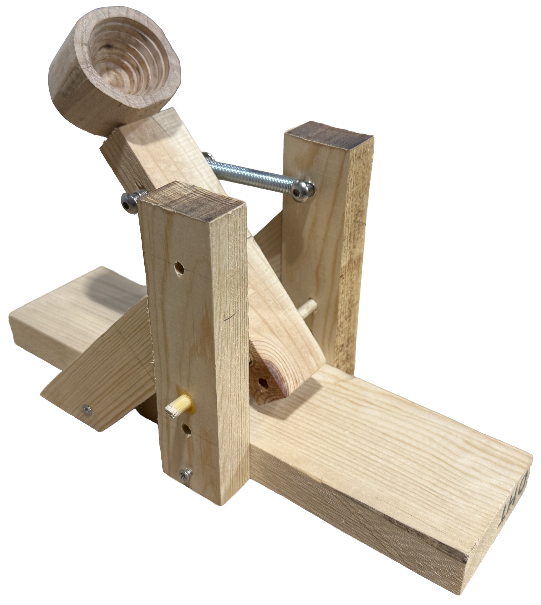
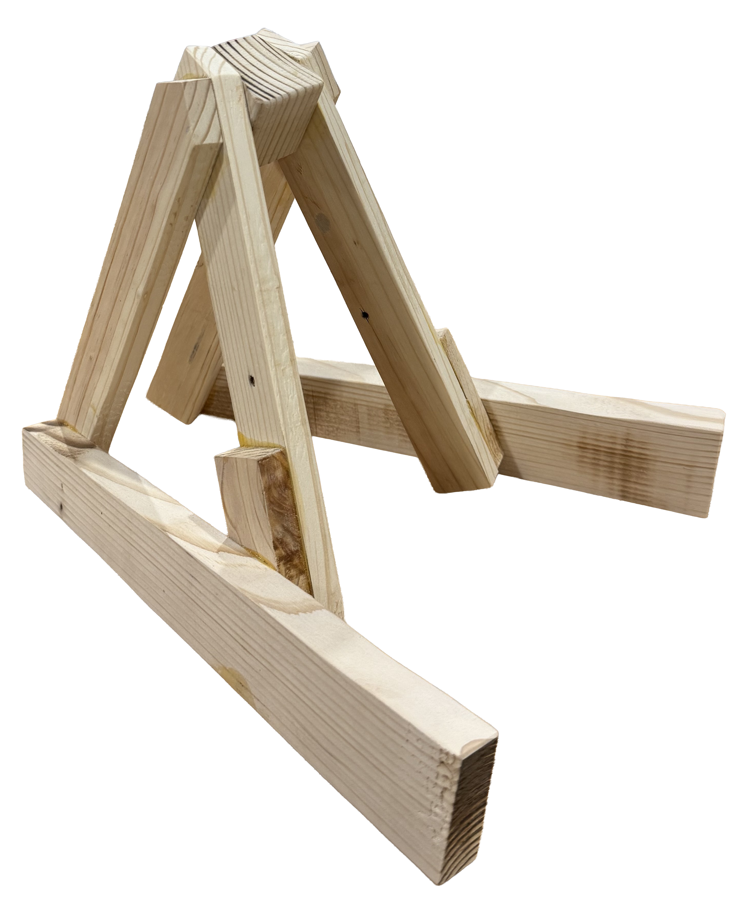

Miscellaneous Projects
A collection of shorter projects focused on rapid prototyping, shop tools, and software mastery.
Personal Portfolio Website
Sept 2025
Developed this responsive portfolio site from scratch to showcase engineering and design work. Focused on clean UI/UX and cross-device compatibility.
SolidWorks Technical Drawing
March 2025
A deep dive into professional-standard technical drafting. Created comprehensive dimensioned drawings including section views and tolerancing for a mechanical cap assembly.

Spring-Powered Catapult
June 2025
A mechanical build focused on woodworking and tension logic. This project served as a foundation for understanding shop tool safety and material fastening.

Guitar Stand
July 2025
Designed and fabricated a custom stand for half-size guitars. Focused on ergonomic support and wood finishing techniques.
